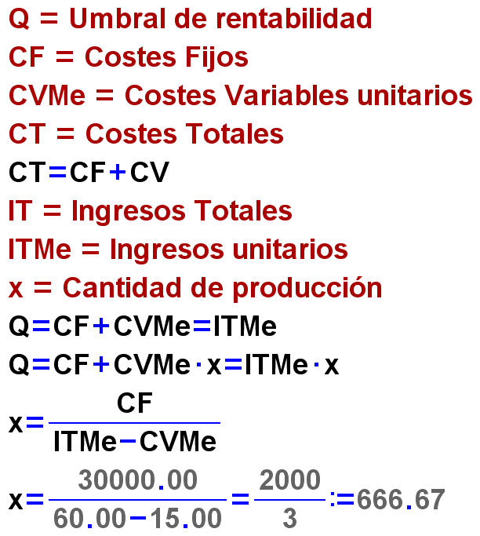
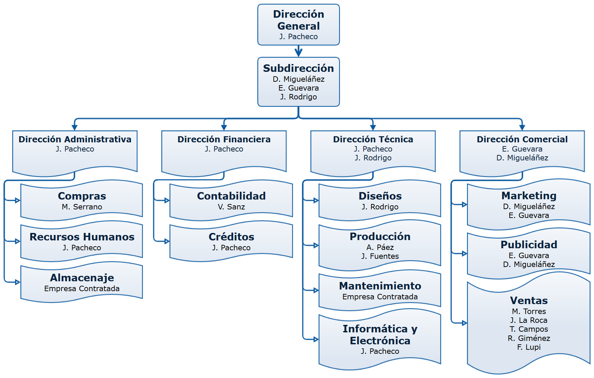

Color Picker
Índice de contenidos:
Fase 1 Estudio de mercado
Análisis del producto
Color Picker modelo Pen es una herramienta novedosa que ha creado la empresa Color Picker. Anteriores a la creación de Color Picker Pen existen herramientas similares que presentan un funcionamiento y un acabado incompletos, así como utilidades en programas para diferentes plataformas digitales.
Fuentes de información y Necesidades que cubre
Diversos análisis demuestran que la ausencia de una herramienta que te permita identificar el color de un objeto real está impidiendo a los diseñadores gráficos trabajar con la comodidad y la rapidez que les gustaría. Añadiendo a esto la imposibilidad que presentan las personas con deficiencias de daltonismo en la visión de interpretar toda la gama de colores, Color Picker procede a crear una herramienta que solvente ambos problemas habituales. De forma resumida, Color Picker tiene dos aplicaciones esenciales:
Permite a diseñadores gráficos utilizar colores que se obtienen directamente del mundo físico, por lo que dota a sus creaciones de mayor autencicidad y fidelidad.
Se puede emplear conjuntamente con aplicaciones que adapten los colores para usuarios daltónicos para así permitirles entender qué colores tiene el ambiente que les rodea.
El reducido peso y tamaño del modelo Pen de Color Picker hace que sea cómodo de transportar y utilizar en cualquier situación.
Los análisis y referencias que fueron empleados para desarrollar el producto se encuentran el la siguiente lista:
Proceso de investigación
Mientras estábamos estudiando los colores y la forma en la que el ojo humano los capta e interpreta, se nos ocurrió que usando lectores de luz y color, y un software informático de buena calidad, sería posible reconocerlos de forma inequívoca y expresable en parámetros digitales que permitan múltiples aplicaciones.
Después de una exhaustiva búsqueda de información, nos dimos cuenta de que existe muchísima teoría sobre estas cuestiones pero, a nivel práctico, no se había desarrollado nada que permitiera identificar los colores de una manera sencilla y con la exactitud que buscábamos. Por ello, nos decidimos a desarrollar un dispositivo capaz de captar, no solo los diversos colores, sino también, las distintas tonalidades y patrones.
Aprovechando los avances informáticos en chips y en microcircuitos y en las lentes ópticas, se nos ocurrió crear algo tan manejable como un bolígrafo pero que en vez de escribir, lo que hace es captar la luz que reflejan las diversas superficies a las que acercamos su sensor y mediante una tecnología inalámbrica de emisión de ondas, conseguir que en diversos aparatos (incluidos los teléfonos modernos), se pueda interpretar la información captada por el bolígrafo.
Análisis de mercado:
Estudio de mercado
El producto Color Picker es viable para su lanzamiento al mercado por los siguientes motivos:
Es una herramienta que permite un rápido aprendizaje de su funcionamiento debido a que es sencilla tanto en finalidad como en útilización.
Se ajusta a las normativas de dispositivos tecnológicos europeas por lo que no será rechazada por ser demasiado extraño.
Permite una utilización tanto a nivel empresarial como individual.
Existen tiendas y servicios que actualmente venden productos relacionados, por lo que no resultará difícil de encontrar para el interesado
Su eficacia y durabilidad están controlados rigurosamente en el departamento de control de calidad.
Es un producto que no dejará de ser consumido porque forma parte de la solución a un problema atemporal, como es la imposibilidad de capturar colores del mundo físico. Además servirá como punto de partida para nuevos avances tecnológicos.
Será utilizado en la enseñanza, lo que le permitirá abrirse un hueco sólido en la sociedad futura.
Actualmente no existen productos funcionales que sean similares a Color Picker, por lo que tendrá asegurada la aceptación del mismo. Tampoco se conocen fallos de funcionamiento que resulten incapacitantes como para imposibilitar su comercialización.
El producto ya cuenta con la valoración positiva de grupos importantes de diseñadores, que asegurarán una buena imagen del producto con numerosas reviews y unboxings.
Todo lo mencionado anteriormente servirá para crear una base comercial sólida alrededor del producto Color Picker y asegurar su viabilidad cuando sea comercializado.
La empresa Color Picker adoptará una estrategia de diferenciación con el fin de que el producto conserve su viabilidad y su posicionamiento en el mercado. Ésta consistirá en resaltar los aspectos que diferencian a Color Picker del resto de la competencia, como el diseño, la imagen, el servicio de soporte y ayuda al consumidor, entre otros.
Umbral de rentabilidad
El punto muerto o umbral de rentabilidad representa el nivel de ventas para el que los ingresos y los costes totales de la empresa coinciden, y por tanto, en el que el resultado o beneficio es cero. El umbral de rentabilidad es la cifra de ventas en la que la empresa ni pierde ni gana. Es el punto de equilibrio que indica el volumen de operaciones (cifra de ventas) que tiene que realizar la empresa para cubrir todos sus costes, tanto los fijos como los variables, por ello en este punto se igualan los costes totales a los ingresos totales. Se llama también umbral de rentabilidad porque es a partir de este punto cuando la empresa empieza a obtener beneficios, mientras que por debajo de este nivel obtendría pérdidas.
La empresa Color Picker tiene un umbral de rentabilidad de 666,67 unidades, lo que representa la cantidad mínima de ventas que han de producirse para empezar a obtener beneficios.
El umbral de rentabilidad se calcula de la siguiente manera:
Color Picker tiene unos costes fijos de30.000,00 €, unos costes variables unitarios de15,00€y unos ingresos unitarios de60,00 €. Aplicando la fórmula de rentabilidad a estos datos se obtiene el valor del umbral de rentabilidad en unidades de producción.

La siguiente gráfica representa el umbral de rentabilidad, que demuestra la validez del resultado previo de 666,67 unidades:
NOTA: Las operaciones realizadas para representar el gráfico anterior se pueden revisar en la siguiente hoja de cálculo realizada en Excel DescargarUmbral de Rentabilidad.xlsx
Ley de oferta y demanda
La ley de la oferta expresa la relación directa que existe entre el precio y la cantidad ofrecida: al aumentar el precio, se incrementa la cantidad ofrecida.
La curva de oferta es la representación gráfica de la relación entre el precio de un bien y la cantidad ofrecida. Al trazar la curva de oferta, suponemos que se mantienen constantes todas las demás variables distintas del precio que pueden afectar a la cantidad ofrecida, como por ejemplo, los precios de los factores productivos.
La función de oferta recoge la relación matemática existente entre la cantidad ofrecida de un bien, su precio y las demás variables que influyen en las decisiones de producción.
La ley de la demanda es la relación inversa existente entre el precio de un bien y la cantidad demandada, en el sentido de que, cuando se reduce el precio, aumenta la cantidad demandada, mientras que, cuando aumenta el precio, se disminuye la cantidad demandada.
Las cantidades demandadas de un bien que los consumidores desean y pueden comprar se denominan demanda de dicho bien.
La curva de demanda es la representación gráfica de la relación existente entre el precio de un bien y la cantidad demandada. Al trazar la curva de demanda, se supone que se mantienen constantes todos los demás factores que pueden afectar a la cantidad demandada, excepto el precio.
La función de demanda es la relación matemática existente entre la cantidad demandada de un bien (QA), su precio (PA), la renta (Y), los precios de otros bienes relacionados (PB) y los gustos (G): QA = D(PA, Y, PB, G).
El precio de equilibrio o precio que vacía el mercado es aquel para el que la cantidad demandada es igual a la ofrecida. Esta es la cantidad de equilibrio. El equilibrio se encuentra en la intersección de las curvas de oferta y demanda.
Un exceso de oferta o excedente es la situación en la que la cantidad ofrecida es mayor que la demandada.
Un exceso de demanda o escasez es la situación en la que la cantidad deman-dada es mayor que la ofrecida.
La ley de la oferta y la demanda establece que el precio de un bien se ajusta para equilibrar la oferta y la demanda.
Análisis de patentes:
Los análisis de patentes nos permiten visualizar los resultados mediante representaciones gráficas (histogramas, matrices, redes o mapas) que simplifican su comprensión y nos permiten responder de un modo sencillo a preguntas complejas, tales como:
¿quiénes son las empresas líderes en cierta tecnología? ¿desde qué año?
¿cuáles son las empresas que han entrado en los últimos años?
¿hay algún grupo de empresas que trabaje conjuntamente?
¿hay especialidades de interés?
¿cuál es la evolución en el tiempo de dichas especialidades?
¿qué especialidades se están desarrollando en los últimos años?
¿cuál es el posicionamiento de mi competencia sobre dichas especialidades?
¿quiénes son las personas con más experiencia en una especialidad?
¿quiénes son los equipos de I+D más productivos?
¿cuáles son las patentes más relevantes (patentes clave)?
Un análisis de patentes permite extraer conclusiones significativas de un conjunto de patentes sin tener que leer su contenido, facilitando reflexiones estratégicas y la toma de decisiones complejas, tales como:
Identificar y comparar a distintas empresas proveedoras de tecnología.
Enfocar la I+D propia para prevenir y solucionar conflictos de patentes.
Analizar la patentabilidad de un desarrollo propio.
Vigilar nuevas patentes de la competencia o alrededor de una tecnología.
Desde Color Picker pretendemos progresar en el análisis de las patentes con el fin de destacar en la mayor cantidad de ámbitos y así conseguir una empresa sólida y proveedora de la última tecnología.
A pesar de que actualmente no exista ningún tipo de competencia que esté a la altura de Color Picker, no vamos a confiarnos y trataremos de hacerlo lo mejor posible.
Modelo de utilidad
El Modelo de Utilidad protege invenciones con menor rango inventivo que las protegidas por Patentes, consistentes, por ejemplo, en dar a un objeto una configuración o estructura de la que se derive alguna utilidad o ventaja práctica.
El dispositivo, instrumento o herramienta protegible por el Modelo de Utilidad se caracteriza por su "utilidad" y "practicidad" y no por su "estética" como ocurre en el diseño industrial.
El alcance de la protección de un Modelo de Utilidad es similar al conferido por la Patente.
La duración del Modelo de Utilidad es de diez años desde la presentación de la solicitud. Para el mantenimiento del derecho es preciso el pago de tasas anuales.
Ver Ley 11/1986, de 20 de marzo, de Patentes
Fase 2 Desarrollo
Diseño
El modelo Pen de Color Picker está compuesto de seis piezas sólidas de origen plástico, un circuito integrado, un lector de luz y color y cables conductores de la electricidad. Está formado por un cuerpo de sección cilíndrica de 133 mm de altura y con bases de 30 mm de diámetro. Tiene un diseño totalmente ergonómico puesto que está dotado de partes de goma blanda por las que se agarra mejor el dispositivo. En su interior contiene un recipiente para 2 pilas AA al que se accede desenroscando la base del Color Picker. Se compone de otra rosca que posibilita el acceso al lector de color en caso de que estuviese deteriorado y hubiese que reemplazarlo por otro.
En la siguiente colección de imágenes se representan todas las partes del Color Picker:
En el siguiente contenido se puede navegar por la perspectiva tridimensional esquematizada del dispositivo con una sección vertical y sin ella:
Prototipos
/*
Color Picker open source code.
http://kalinuska.github.io/Color-Picker/
*/
const int buttonPin = 2; //define a pin for pushbutton
const int bluePin = A0; //define a pin for blue resistor
const int greenPin = A1; //define a pin for green resistor
const int redPin = A2; //define a pin for red resistor
const int ledPin = 13; //define a pin for LED
const int redRGBPin = 9; //define a pin for red RGB
const int greenRGBPin = 10; //define a pin for green RGB
const int blueRGBPin = 11; //define a pin for blue RGB
int t = 0; //time variable
int buttonState = 0; //pushbutton interaction
int blueValue = 0; //color value
int greenValue = 0; //color value
int redValue = 0; //color value
void setup() { //void setup open
Serial.begin(9600); //begin serial communcation
pinMode( ledPin, OUTPUT ); //define pin type
pinMode( buttonPin, INPUT ); //define pin type
pinMode( redRGBPin, OUTPUT ); //define pin type
pinMode( greenRGBPin, OUTPUT ); //define pin type
pinMode( blueRGBPin, OUTPUT ); //define pin type
} //void setup close
void loop() { //void loop open
buttonState = digitalRead(buttonPin); //button interaction
if (buttonState == HIGH) { //pressed button
digitalWrite(ledPin, HIGH); //LED on
delay(100); //delay 100ms
blueValue = analogRead(bluePin); //read color values from analogRead
greenValue = analogRead(greenPin); //read color values from analogRead
redValue = analogRead(redPin); //read color values from analogRead
blueValue = map(blueValue, 13, 535, 0, 255); //map colorValue
greenValue = map(greenValue, 1, 330, 0, 255); //map colorValue
redValue = map(redValue, 10, 571, 0, 255); //map colorValue
Serial.print("Blue"); //print header
Serial.print("\t"); //print tab
Serial.print("Green"); //print header
Serial.print("\t"); //print tab
Serial.print("Red"); //print header
Serial.print("\t"); //print tab
Serial.print("HEX-B"); //print HEXheader
Serial.print("\t"); //print tab
Serial.print("HEX-G"); //print HEXheader
Serial.print("\t"); //print tab
Serial.print("HEX-R"); //print HEXheader
Serial.println(""); //new line
Serial.print(abs(blueValue)); //print resistor value
Serial.print("\t"); //print tab
Serial.print(abs(greenValue)); //print resistor value
Serial.print("\t"); //print tab
Serial.print(abs(redValue)); //print resistor value
Serial.print("\t"); //print tab
Serial.print(abs(blueValue), HEX); //print HEXresistor value
Serial.print("\t"); //print tab
Serial.print(abs(greenValue), HEX); //print HEXresistor value
Serial.print("\t"); //print tab
Serial.print(abs(redValue), HEX); //print HEXresistor value
Serial.println(""); //new line
delay(100); //10ms delay
setColor(abs(redValue),abs(greenValue),abs(blueValue));
blueValue = 0; //reset colorValue
greenValue = 0; //reset colorValue
redValue = 0; //reset colorValue
}
else { //released button
delay(100); //delay 100ms
digitalWrite(ledPin, LOW); //LED off
}
delay(20); //smoother delay
} //void loop close
void setColor(int r, int g, int b) { //void setColor open
analogWrite(redRGBPin,r); //set RGB color
analogWrite(greenRGBPin,g); //set RGB color
analogWrite(blueRGBPin,b); //set RGB color
delay(800); //delay 800ms
analogWrite(redRGBPin,0); //reset RGB color
analogWrite(greenRGBPin,0); //reset RGB color
analogWrite(blueRGBPin,0); //reset RGB color
} //void setColor close
Normalización
La normalización ofrece la garantía de que los productos y sistemas desarrollados siguiendo sus especificaciones presenten las características deseadas en cuanto a seguridad, calidad, eficacia y fiabilidad. Cuando los productos y sistemas no se ajustan a las normas establecidas, el producto resultante puede que no sea seguro, ni fiable, ni de buena calidad.
Detrás de una norma técnica está el trabajo realizado por comités de fabricantes, organizaciones de consumidores, centros de investigación y departamentos gubernamentales, entre otros, quienes, tras muchas horas de debates y ensayos, determinan las especificaciones para el producto en cuestión.
La aplicación de las normas técnicas es voluntaria, aunque en muchos casos las leyes pueden hacer obligatoria la aplicación de algunas de ellas. Su aplicación aporta beneficios a las empresas, ya que éstas pueden competir mejor en los mercados adoptando métodos normalizados.
El modelo Pen de Color Picker se ajusta e la normativa europea en cuanto a los tamaños de las partes que lo componen. De esta forma podemos lograr un mayor potencial competitivo en el mercado de nuestros productos.
Fase 3 Planificación de la producción
Fases de la fabricación
Desde el departamento técnico de Color Picker se han establecido las siguientes fases como proceso principal de fabricación:
Obtención de las materias primas: Compramos a compañías especializadas en cada uno de los tipos de materia prima que requerimos para la fabricación de Color Picker.
Ensamblado de las piezas en la cadena de montaje: Este proceso se trata en profundidad en el siguiente apartado.
Control de Calidad: Nos aseguramos de que los lotes de productos no sean defectuosos mediante un estricto control de calidad. Los materiales que se hayan empleado para fabricar algún lote defectuoso son reutilizados.
Embalaje y transporte: Todos los productos que hayan superado exitosamente el control de calidad son preparados para su transporte disponiéndolos en paquetes con envoltorios de seguridad acolchados.
Diagramas de fabricación y montaje
Para la fabricación de Color Picker se siguen los siguientes pasos en la cadena de ensamblado:
Conformación de la cubierta protectora de plástico y ajuste de la misma al resto de piezas.
Colocación del sensor de color en el extremo superior interno de la cubierta.
Prparación del microchip y del módulo wi-fi para su correcto funcionamiento en el producto.
Instalación del microchip y del módulo wi-fi en el interior de la cubierta.
Colocación del soporte para baterías.
Conexión de todos los elementos presentes hasta este punto.
Configuración e instalación del botón inferior.
Unión de todas las piezas sueltas para resultar en el Pen completo.
Impresión de los documentos de garantía y normas de seguridad que se adjuntarán al paquete del producto.
Revisión de la correcta ejecución de todo el proceso.
Normas de seguridad
En Color Picker estamos muy concienciados con la seguridad de nuestras instalaciones y el correcto uso de las mismas. Por este motivo implantamos unas normas de seguridad que tratan de evitar que ocurra cualquier tipo de percance.
Las múltiples categorías de normas son las siguientes:
Orden y limpieza:
Mantén limpio y ordenado tu puesto de trabajo.
No dejes materiales alrededor de las máquinas. Colócalos en lugar seguro y donde no estorben el paso.
Recoge las tablas con clavos, recortes de chapa y cualquier otro objeto que pueda causar un accidente.
Guarda ordenadamente los materiales y herramientas. No los dejes en lugares inseguros.
No obstruyas los pasillos, escaleras, puertas o salidas de emergencia.
Equipos de protección individual:
Utiliza el equipo de seguridad que la empresa pone a tu disposición.
Si observas alguna deficiencia en él, ponlo enseguida en conocimiento de tu superior.
Mantén tu equipo de seguridad en perfecto estado de conservación y cuando esté deteriorado pide que sea cambiado por otro.
Lleva ajustadas las ropas de trabajo; es peligroso llevar partes desgarradas, sueltas o que cuelgen.
En trabajos con riesgos de lesiones en la cabeza utiliza el casco.
Si ejecutas o presencias trabajos con proyecciones, salpicaduras, deslumbramientos, etc., utiliza gafas de seguridad.
Si hay riesgos de lesiones para tus pies, no dejes de utilizar el calzado de seguridad.
Cuando trabajes en alturas colócate el cinturón de seguridad.
Tus vías respiratorias y oidos también pueden ser protegidos: infórmate.
Herramientas manuales:
Utiliza las herramientas manuales sólo para sus fines específicos. Inspecciónalas periódicamente.
Las herramientas defectuosas deben ser retiradas de uso.
No lleves herramientas en los bolsillos salvo que estén adaptados para ello.
Cuando no la utilices deja las herramientas en lugares que no puedan producir accidentes.
Istalación eléctrica:
Toda instalación debe considerarse bajo tensión mientras no se compruebe lo contrario con los aparatos adecuados.
No realices nunca reparaciones en instalaciones o equipos con tensión. Asegúrate y pregunta.
Si trabajas con máquinas o herramientas alimentadas por tensión eléctrica, aíslate. Utiliza prendas y equipos de seguridad.
Si observas alguna anomalía en la instalación eléctrica, comunícala. No trates de arreglar lo que no sabes.
Si los cables están gastados o pelados, o los enchufes rotos se corre un grave peligro, por lo que deben ser reparados de forma inmediata.
Al menor chispazo desconecta el aparato o máquina.
Presta atención a los calentamientos anormales en motores, cables, armarios... Notifícalo.
Si notas cosquilleo al utilizar un aparato, no esperes más: desconéctalo. Notifícalo.
Presta especial atención a la electricidad si trabajas en zonas mojadas y con humedad.
Incendios:
Conoce las causas que pueden provocar un incendio en tu área de trabajo y las medidas preventivas necesarias.
Recuerda que el buen orden y la limpieza son los principios más importantes en la prevención de incendios.
No fumes en lugares prohibidos, ni tires las colillas o cigarros sin apagar.
Controla las chispas de cualquier origen ya que pueden ser causa de muchos incendios.
Ante un caso de incendio conoce tu posible acción y cometido.
Los extintores son fáciles de utilizar, pero sólo si se conocen; entérate de cómo funcionan.
Si manejas productos inflamables, presta mucha atención y respeta las normas de seguridad.
Control de calidad
Todos nuestros productos son sometidos a un control de calidad del tipo visual. Con éste método detectamos aquellos productos que no se ajusten a la estética.
Más de una unidad de cada lote de producción es analizada y son estudiadas sus propiedades físicas.
Cualquier producto que no pase el control de calidad se retira automáticamente y se trata de reciclar y reutilizar lo máximo posible.
Fase 4 Producción
Nombre de la empresa
La empresa que ha creado el producto Color Picker se llama Color Picker.
Logo de la empresa
El logotipo de la empresa es el que se sitúa en la cabecera de este documento. Se compone de un ojo que representa que la posibildad de captar colores con la exactitud del ojo humano es posible gracias a Color Picker
Estructura de la empresa
Materiales y almacenamiento
En nuestra empresa, como ya hemos dicho anteriormente, utilizamos en casi su totalidad materiales reciclados, y debido a las necesidades planteadas por la internacionalización de los mercados, nuestra empresa (y en general, cualquier otra) necesita que tanto los materiales, como su almacenamiento mantengan los más altos niveles de calidad, pero con una ejecución sencilla y ágil, reduciendo así costos de operación (compra de materias primas, traslados, y almacenamiento previo y posterior a la elaboración del producto, así como su distribución), fidelizando las relaciones con el cliente y garantizando el servicio al consumidor final.
El concepto de almacén que anteriormente siempre venia asociado a un espacio dentro de una empresa ha evolucionado, y nosotros hemos optado por centralizar en una empresa externa tanto la recepción de los materiales como la guarda y distribución de nuestro producto final acabado, consiguiendo así disminuir notablemente el coste de alquiler de nuestra planta al reducir enormemente la superficie que necesitamos, así como los costes de mantenimiento (electricidad, aire acondicionado, sistema antincendios, mantenimiento en general), además conseguimos garantizar nuestro suministro de materiales de forma continua y externalizamos la distribución física del producto elaborado.
Así pues frente a un sistema de almacenamiento convencional, que requiere más espacio, y es el que hubiéramos tenido hacer dentro de nuestras instalaciones, hemos optado por un sistema de almacenamiento dinámico en una empresa externa con estanterías dinámicas para el almacenaje que utilizan mucha menos superficie y salen muy rentables, gestionando nosotros los pedidos de los materiales que vamos utilizando (goma, plástico, lectores, circuitos, porta pilas, muelles, cables, material de embalaje, y papel), y organizando con la empresa de almacenaje las recepciones y envíos para la producción, y entrega del producto acabado.
Ayudas y bonificaciones
En nuestra empresa estamos concienciados con el Medio Ambiente, es por ello por lo que usamos en nuestro productos materiales reciclados, y a lo largo de nuestro proceso de producción generamos muy pocos desechos, la mayor parte de los cuales volvemos a incorporar al proceso de producción, consiguiendo un elevado porcentaje de reutilización, y una minúscula cantidad de desechos finales. Por otra parte todos nuestros embalajes tanto en la fase de desarrollo como en la de empaquetado del producto final son biodegradables.
El reciclado de los distintos materiales ofrece numerosas ventajas para nuestra empresa, principalmente ambientales, pero también, sociales y económicas. La compra de materiales reciclados ya supone un ahorro económico puesto que son más baratos que los no reciclados (sin renunciar a la calidad, y aprovechando sus beneficios fiscales), así mismo contribuimos a mantener los recursos y a no contaminar puesto que volvemos a poner este tipo de materiales en circulación. Así, no solo mejoramos la economía, y contribuimos a conservar el medio ambiente, sino que además damos una buena imagen ante otras empresas, clientes, empleados y cualquiera que conozca este hecho.
Entre los materiales que más reciclamos destacan el papel y el cartón, hemos eliminado casi en su totalidad los plásticos en cualquier proceso de embalaje en nuestra cadena de montaje, y hemos usado un plástico reciclado y reciclable para el grueso de nuestro producto, el resto son cables, y algún otro material también procedentes del reciclado. Lo que hasta ahora no hemos conseguido reciclados son los microprocesadores, pero estamos potenciando las actividades de I+D, no solo por las subvenciones y ventajas económicas y fiscales que conllevan, sino para conseguir reciclar también el hardware de nuestro producto.
Respecto a la contratación de empleados y sus beneficios, hemos de destacar que parte de nuestros empleados son mujeres con responsabilidades familiares (según la ley aquellas que tuvieren a su cargo cónyuge, descendientes, ascendientes y demás parientes por consanguinidad o afinidad, hasta el tercer grado inclusive, y, en su caso, por adopción), las cuales conllevan una subvención, y formación profesional gratuita y prioritaria a cargo del Instituto Nacional de Empleo, así como bonificación equivalente al cincuenta por ciento a la cuota empresarial a la Seguridad Social, por trabajador contratado, durante tres años. Y unos cuantos son trabajadores con discapacidad de grado igual o superior al 33% reconocido, cuyos beneficios se detallan a continuación:
Subvención de 3.907 euros por cada contrato celebrado a tiempo completo.
Cuando el contrato por tiempo indefinido se concierte a tiempo parcial, la subvención de 3.907 euros se reducirá proporcionalmente a la jornada pactada.
Bonificación de las cuotas empresariales de la Seguridad Social. Si el contrato se celebra a tiempo completo, la empresa tendrá derecho a las siguientes bonificaciones:
Trabajadores discapacitados sin discapacidad severa:
Hombres Mujeres Menores de 45 años 4.500 euros/año 5.350 euros/año Mayores de 45 años 5.700 euros/año 5.700 euros/año Trabajadores discapacitados con discapacidad severa:
Hombres Mujeres Menores de 45 años 5.100 euros/año 5.950 euros/año Mayores de 45 años 6.300 euros/año 6.300 euros/año Si la contratación se realiza a tiempo parcial, la cuantía de la bonificación corresponderá a lo establecido en el artículo 2.7 de la Ley 43/2006, de 29 de diciembre, según redacción dada por el artículo 6.Dos de la Ley 27/2009, de 30 de diciembre (B.O.E. de 31 de diciembre).
La empresa, para poder bonificarse en la cuota empresarial, tendrá que cumplir los requisitos establecidos en la Ley 43/2006, de 29 de diciembre (BOE de 30 de diciembre).
Subvención para la adaptación de puestos de trabajo, eliminación de barreras o dotación de medios de protección personal hasta
901,52euros.Deducción de la cuota íntegra del Impuesto de Sociedades en la cantidad de 6.000 euros por cada persona/año de incremento del promedio de la plantilla de trabajadores con discapacidad, contratados por tiempo indefinido, respecto a la plantilla media de trabajadores con discapacidad del ejercicio inmediatamente anterior con dicho tipo de contrato.
Todo esto cumpliendo los siguientes requisitos:
Se mantendrá la estabilidad de estos trabajadores por un tiempo mínimo de tres años y-Se presenta por la Empresa acreedora de la subvención del alta del trabajador contratado y justificante de estar al corriente en el pago de sus obligaciones a la Seguridad Social.
Compromiso de mantener el nivel de empleo durante tres años de manera que la plantilla se incremente, al menos, con los trabajadores subvencionados.
Los trabajadores que den derecho a subvención serán incorporados a la Empresa en régimen de contrato indefinido, en caso de despido procedente, serán sustituidos por otros trabajadores con similares características.
Fase 5 Venta
Lanzamiento del producto:
- Nombre del producto:
El producto se llama Color Picker y actualmente tiene un único modelo destinado para la venta al público, el Pen. Tiene un coste total de 55,99 € al consumidor, en los puestos de venta reconocidos.
- Perfil del consumidor:
Color Picker está especialmente enfocado para que lo utilicen personas de múltiples ámbitos. Desde diseñadores gráficos digitales, hasta arquitectos; estudiantes de diseño, particulares, aficionados y editores de todos los campos. También ha sido comprobada su eficacia en cuanto a herramienta de apoyo a personas con daltonismo y otras discapacidades visuales leves, por lo que muchas de estas personas, si no todas, estarían interesados en este producto.
Aspecto físico
Empaquetado
Todas las unidades de Color Picker son preparadas para su transporte disponiéndolas en paquetes con envoltorios de seguridad acolchados con el fin de evitar fracturas o deterioros durante le transporte.
Las dimensiones del paquete son un poco mayores que las del producto: 100mm·270mm·150mm.
Plan de marketing:
Promociones
Color Picker está promocionando muchas empresas que se incluyen en su misma categoría con el fin de obtener ingresos para el lanzamiento de la empresa. Estas empresas son: Alpino, Maped, Stabilo, Pilot, bq, Samsung, IKEA, BIC, A3Media....
Campañas y eslogan
El producto Color Picker está siendo anunciado en la redes sociales, en las que adquiere una enorme popularidad entre los usuarios y en revistas y publicaciones especializadas en arte y diseño. Está captando la atención de los consumidores por medio del eslogan que tiene Color Picker:
Da el color que le corresponde al mundo a tu mundo.
Se está invirtiendo también en anunciar el producto en GoogleAds y en otras empresas de gestión de publicidad.
Publicidad
Distribución
Color Picker se distribuye tanto a particulares como a empresas por medio de servicios de mensajería. Si la compra supera las 3 unidades el envío pasa a ser gratito.
Garantía
Para reclamar y hacer valer la garantía, el consumidor puede dirigirse tanto al vendedor como al fabricante del producto.
La ley establece un plazo general de 2 años de garantía desde la compra:
Si el defecto sale a la luz durante los primeros 6 meses desde la entrega del bien, se presume que es un defecto de origen, el consumidor no deberá probar nada para conseguir que se aplique la garantía.
Si el problema se manifiesta pasados esos 6 meses, el fabricante o el vendedor pueden exigir al consumidor que demuestre que el fallo existía de origen. Aplicar la garantía puede resultarle así difícil, pues necesitará informes periciales.
La garantía protege al consumidor de los defectos de fábrica, problemas prematuros en un producto o desajustes respecto a lo prometido, y obliga al vendedor a subsanar esos fallos, sin que esa solución suponga coste o molestias para el consumidor.
Si un producto en periodo de garantía es defectuoso, el consumidor puede:
Reparar el producto.
Sustituir el producto por otro nuevo (no se sustituyen los bienes que se consumen con el uso ni los de segunda mano).
Pedir una reducción del precio del producto.
Resolver el contrato.
En principio, el consumidor puede elegir si prefiere que el producto en garantía le sea reparado o cambiado por uno nuevo, pero el fabricante puede alegar que una de las formas le parece desproporcionada y elegir la que él convenga… siempre que el consumidor esté de acuerdo. Cuando no sea posible o razonable sustituir el producto en garantía por uno nuevo o si el plazo de tiempo es exagerado… el consumidor podrá pedir una reducción del precio o resolver el contrato. En cualquier caso:
Tanto la reparación como el cambio deben ser totalmente gratuitos para el consumidor.
Durante el tiempo que esté sin el producto mientras lo cambian o lo reparan el plazo de la garantía se suspende.
Tanto el producto reparado como el nuevo cuentan como mínimo con 6 meses de garantía, aunque quedase menos tiempo para que cumpliese la garantía original.
Reciclaje
La compra de materiales reciclados supone un ahorro económico puesto que son más baratos que los no reciclados (sin renunciar a la calidad, y aprovechando sus beneficios fiscales), al tiempo que contribuye a mantener los recursos y a no contaminar puesto que se vuelven a poner este tipo de materiales en circulación.
Cuando el consumidor deja de hacer uso del producto y tiene la intención de deshacerse de él, puede llevarlo él mismo a un punto de reciclaje o entregárnoslo para que lo reciclemos directamente en nuestras instalaciones.
Reparto de tareas
Créditos
Licencia
Fase 1 Estudio del mercado
Análisis del producto:
Este producto, denominado Color Picker, se trata de una herramienta novedosa con forma de bolígrafo que captura el color de la superficie en la que se sitúe y lo envía como código hexadecimal, decimal o RGB al usuario. Tiene dos aplicaciones esenciales:
Permite a diseñadores gráficos utilizar colores que se obtienen directamente del mundo físico, por lo que dota a sus creaciones de mayor autencicidad y fidelidad.
Se puede emplear conjuntamente con aplicaciones que adapten los colores para usuarios daltónicos para así permitirles entender qué colores tiene el ambiente que les rodea.
Por el momento solamente ha sido diseñado un modelo de Color Picker: el modelo Pen. Gracias a su reducido tamaño y a su ligereza, este modelo resulta muy cómodo de transportar y emplear en cualquier ocasión.
Color Picker se basa en el sistema de transmisión de información inalámbrico Bluetooth® v4.0. Color Picker transmitirá los datos de los colores que captures por medio de una aplicación disponible para ordenadores Windows®, MacOS® y dispositivos móviles iOS® y Android®.
En el ámbito de marketing Color Picker es un bien, tangible e interactivo que constituye la marca comercial propia: Color Picker.
Esquema del Prototipo:
El modelo Pen de Color Picker está compuesto de seis piezas sólidas de origen plástico, un circuito integrado, un lector de luz y color y cables conductores de la electricidad. Está formado por un cuerpo de sección cilíndrica de 133 mm de altura y con bases de 30 mm de diámetro. Tiene un diseño totalmente ergonómico puesto que está dotado de partes de goma blanda por las que se agarra mejor el dispositivo. En su interior contiene un recipiente para 2 pilas AA al que se accede desenroscando la base del Color Picker. Se compone de otra rosca que posibilita el acceso al lector de color en caso de que estuviese deteriorado y hubiese que reemplazarlo por otro.
En la siguiente colección de imágenes se representan todas las partes del Color Picker:
En el siguiente contenido se puede navegar por la perspectiva tridimensional esquematizada del dispositivo con una sección y sin ella:
Materias primas necesarias para su construcción:
El modelo Pen de Color Picker está construido partiendo de la siguiente relación de materiales:
| Material | Función |
|---|---|
| Goma blanda color gris | Unión de la punta con el cuerpo del dispositivo. Facilita el agarre del objeto. |
Plástico rígido PS |
Cuerpo, punta y base del dispositivo. |
| Lector de luz y color | En la punta, capta el color de un objeto físico. |
| Circuito Integrado | Realiza todas las tareas relacionadas con el procesamiento y envío del color al usuario |
| Portapilas | Proporciona la alimentción energética por medio de dos pilas AA |
| Muelles | Conectan los polos de las pilas |
| Botón de goma y plástico | Controla el circuito interno del Color Picker |
Lanzamiento del producto:
- Nombre del producto:
El producto se llama Color Picker y actualmente tiene un único modelo destinado para la venta al público, el Pen. Tiene un coste total de 55,99 € al consumidor, en los puestos de venta reconocidos.
- Perfil del consumidor:
Color Picker está especialmente enfocado para que lo utilicen personas de múltiples ámbitos. Desde diseñadores gráficos digitales, hasta arquitectos; estudiantes de diseño, particulares, aficionados y editores de todos los campos. También ha sido comprobada su eficacia en cuanto a herramienta de apoyo a personas con daltonismo y otras discapacidades visuales leves, por lo que muchas de estas personas, si no todas, estarían interesados en este producto.
- Análisis del mercado. Demanda:
Color Picker es una novedad hoy en día y pocos productos pueden ponerse a su altura en cuanto a utilidad, sencillez, eficacia y productividad, así como su relación calidad precio.
Debido a la baja presencia de competencia, la popularidad que está obteniendo Color Picker en las redes sociales y el asumible precio que tiene, recibirá una alta demanda nada más salir a la venta, porque el cosumidor estará dispuesto a comprar el producto al precio establecido en el mercado (55,99 €). Posteriormente se cree que se reducirá hasta el punto de compensar el descenso provocado por la aparición de nuevas alternativas a Color Picker Pen.
Al producto Color Picker se le estima una tasa de éxito en el mercado del orden del 83%.
- Campaña de marketing: medios de promoción, eslogan...
El producto Color Picker está siendo anunciado en la redes sociales, en las que adquiere una enorme popularidad entre los usuarios y en revistas y publicaciones especializadas en arte y diseño. Está captando la atención de los consumidores por medio del eslogan que tiene Color Picker:
Da el color que le corresponde al mundo a tu mundo.
Se está invirtiendo también en anunciar el producto en GoogleAds y en otras empresas de gestión de publicidad.
Coste de la primera tirada:
Coste de la producción de una serie (recursos materiales y humanos) y coste de la publicidad.
El coste por unidad detallado de la producción de la primera tirada de Color Picker viene determinado por:
| Concepto | Coste por unidad |
|---|---|
| Diseño del producto | 5,00 € |
| Elaboración industrializada del producto | 10,2321 € |
| Primera campaña de promoción | 15,00 € |
| Segunda campaña de promoción | 12,00 € |
| Venta del producto | 2,00 € |
| Impuestos aplicables | 11,7579 € |
| TOTAL | 55,99 € |
Fabricando un total de 400 unidades el coste alcanza los 22.396,00 €.
Precio del producto en el mercado:
El precio del producto queda establecido por el coste de producción total, en el que se incluyen un 10% de ganancias. Resulta en un total de 55,99 € de los que la marca Color Picker obtiene 5,60 € por cada unidad con el fin de compensar los costes de gestión de la nueva empresa.
Reparto de Tareas:
La siguiente tabla muestra la relación de tareas y la persona que las ha de realizar:
| Categoría | JA | ER | DA | JU |
|---|---|---|---|---|
| 1 - Estudio del mercado | Análisis del producto (nuevo/copia/mejora). Necesidades que cubre. Análisis de mercado: - Estudio de mercado. - Umbral de rentabilidad. - Ley de oferta y demanda. |
Análisis de patentes: - Modelo de utilidad. |
Fuentes de información. Proceso de investigación. |
|
| 2 - Desarrollo | Diseño 3D. Prototipo (Arduino). Normalización (¿cumple con normativas?). |
Vistas diédricas. |
||
| 3 - Planificación de la producción | Fases de la fabricación. Diagramas de fabricación y montaje. |
Normas de seguridad. Control de calidad. |
||
| 4 - Producción | Nombre de la empresa. Logotipo de la empresa. |
Descripción de la empresa. Tipo de empresa. Estructura de la empresa. Materiales y almacenamiento de los mismos. Beneficios por ayuda al mediambiente y contratos. |
||
| 5 - Venta | Empaquetado del producto. Plan de marketing: - Distribución del producto. |
Plan de marketing: - Patrocinios de empresa y producto. - Cartel publicitario. |
Plan de marketing: - Vídeo publ - Anuncio radio/canción. |
Aspecto físico del producto. |
Este proyecto ha sido elaborado por Javier Pacheco.
This layout was generated by GitHub Pages using the Architect theme by Jason Long.